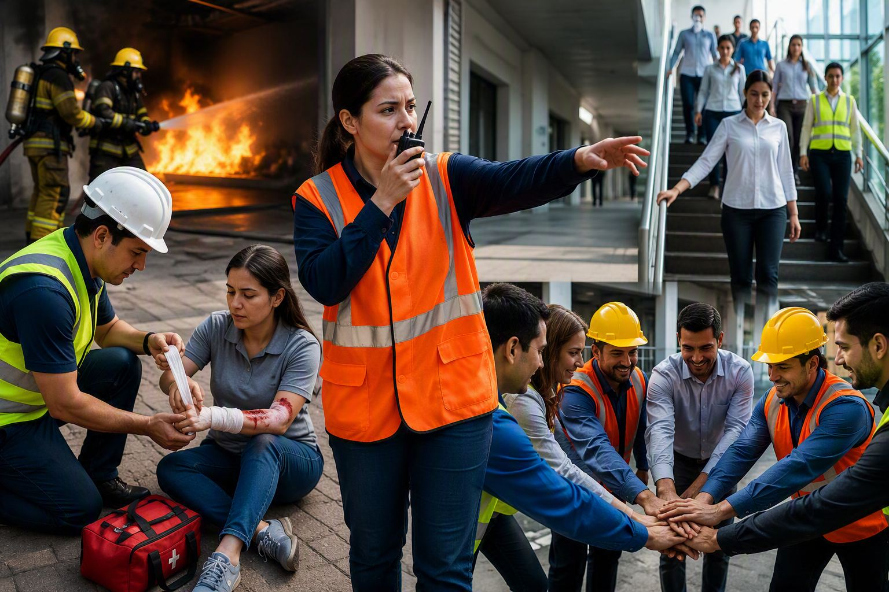
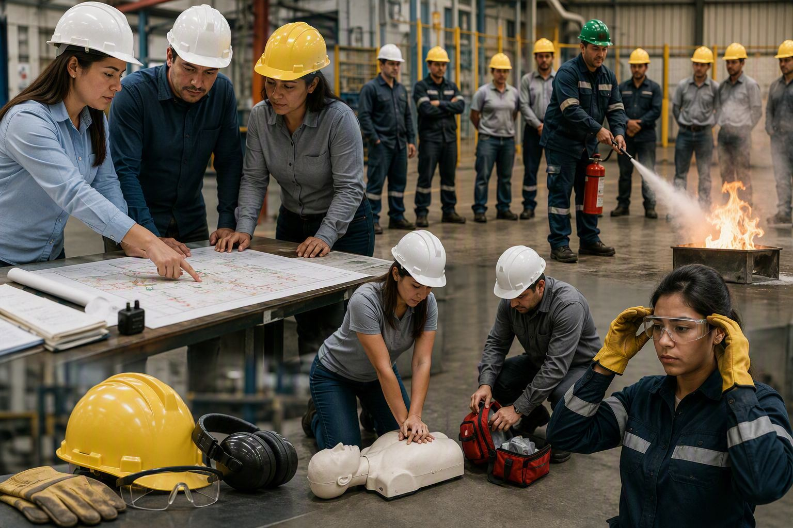

Servicios
¿Son importantes las brigadas de emergencia?
¿Son importantes?
Las brigadas de emergencia son fundamentales para garantizar una respuesta rápida y organizada ante situaciones críticas dentro de una empresa. Su capacitación y preparación permiten actuar de manera eficiente, reduciendo riesgos para las personas y minimizando daños materiales.
Entre sus principales beneficios se encuentran:
- Respuesta oportuna: permiten actuar de forma inmediata ante emergencias, ayudando a controlar la situación y proteger la vida de las personas.
- Reducción de daños: contribuyen a disminuir las consecuencias de incendios, accidentes, evacuaciones u otros eventos de riesgo.
- Cumplimiento legal: ayudan a las organizaciones a cumplir con las exigencias de Seguridad y Salud en el Trabajo (SST).
- Fortalecimiento de la cultura de seguridad: promueven la prevención y generan mayor conciencia sobre los riesgos laborales.
- Mayor confianza y bienestar: los trabajadores se sienten más seguros al saber que existe un equipo preparado para atender emergencias.
- Preparación integral: permiten a la empresa estar lista para enfrentar diferentes escenarios, como incendios, emergencias médicas, accidentes o desastres naturales.
- Desarrollo de competencias: los brigadistas adquieren conocimientos y habilidades que fortalecen su crecimiento personal y profesional.
- Mejora de la imagen corporativa: reflejan el compromiso de la organización con la seguridad, la salud y el bienestar de sus trabajadores.


Desafíos para su implementación
Capacitación continua
La capacitación no debe ser un evento único. Es crucial que los miembros de la brigada reciban formación continua para mantenerse actualizados y mejorar sus habilidades.
Comunicación eficaz
Una buena comunicación es esencial durante una emergencia. Establece canales de comunicación claros y efectivos para que todos los miembros de la brigada puedan coordinarse adecuadamente.
Evaluación y mejora
Después de cada simulacro o emergencia, evalúa el desempeño de la brigada y realiza mejoras. Identifica los puntos fuertes y las áreas que necesitan optimización.
La brigada de emergencia SST debe someterse a revisiones periódicas para verificar si la capacitación, la asignación de funciones y el equipamiento siguen siendo adecuados para los riesgos actuales de la empresa. Los simulacros, las actas, los tiempos de respuesta y los hallazgos posteriores a cada ejercicio son insumos clave para ajustar el plan y mantener la capacidad de respuesta en un nivel funcional.
¿Listos para conformar tu brigada?
Te acompañamos desde el diagnóstico hasta los simulacros.